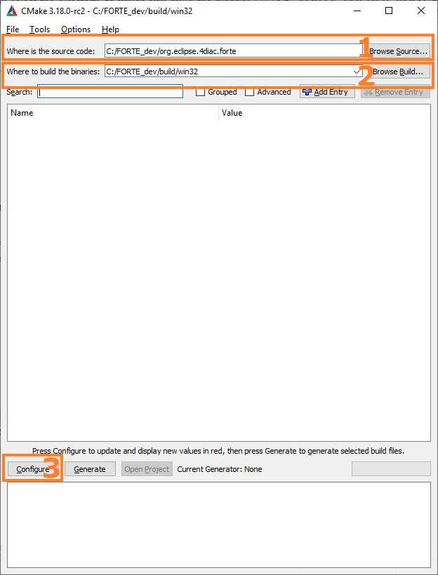
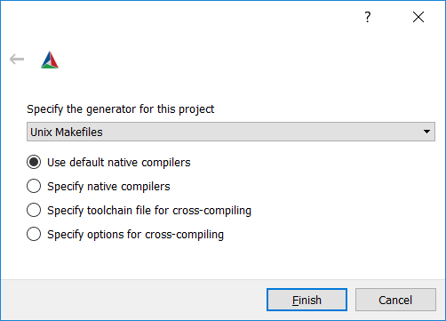
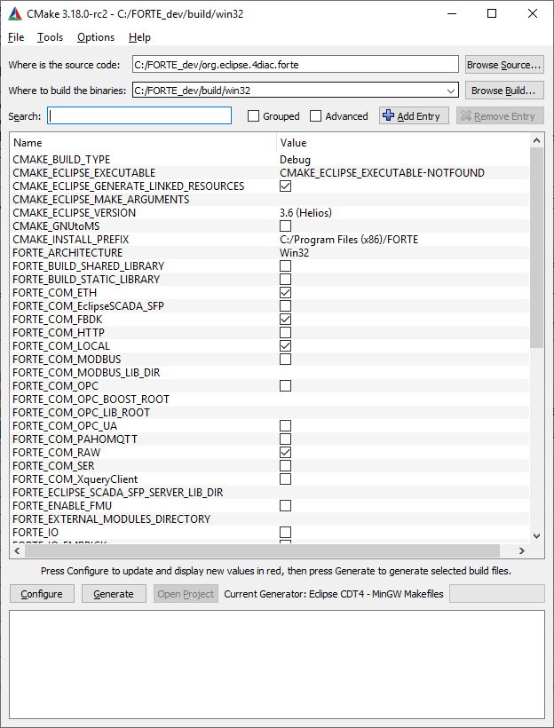
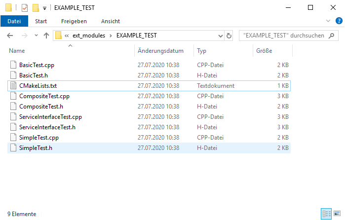
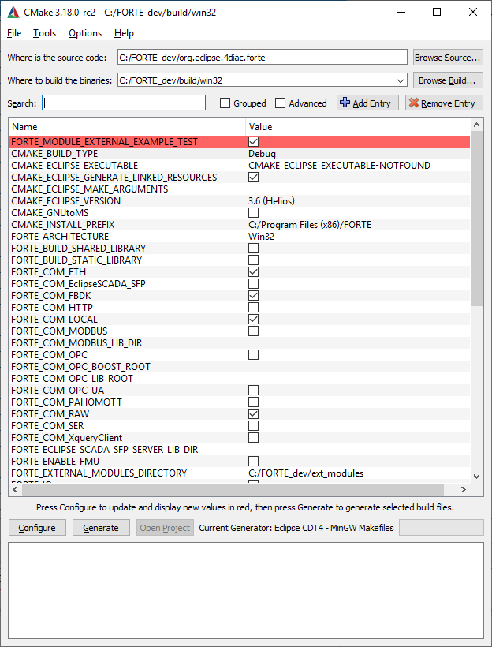

cd C:\FORTE_dev\build\win32 make
Installation
4diac IDE
To install 4diac IDE, simply download the latest version for your operating system under downloads. Unzip it to any desired folder and start the 4diac IDE. It already contains a Function Block library. If you only want to use available Function Blocks, you are ready to go.
Building Your own 4diac IDE From Source
Running 4diac IDE from source has the advantage that you can easily keep up with the developments performed in the Git repository. If you want to run 4diac IDE from source, follow the installation steps. This option aims mainly at 4diac IDE developers or people who wish to extend 4diac IDE.
4diac FORTE
4diac FORTE can be used in two ways: For conducting first experiments with Eclipse 4diac, you can use the pre-built version of 4diac FORTE which is available as download for Linux and Windows. It can be used for applications unless you need own Function Blocks. The step by step tutorial will direct you to making a simple application with 4diac IDE and pre-built 4diac FORTE. If you want to start using 4diac IDE right away, you can skip the rest of the page and go directly to the step by step tutorial or the Start Here-page.
If you want to develop your own Function Blocks or to run 4diac FORTE on control devices, you have to download and set up 4diac FORTE for the specific platform you are using as shown in the next sections.
Building 4diac FORTE From Source
In order to use own Function Blocks, you will need to build 4diac FORTE from the source code. In this section, the details for Windows and Unix-based systems are explained, since most user’s first test is done on these platforms. For other platforms, links are provided here.
You’ll need to perform several steps:
-
Install a compiler for Windows or Unix-based systems
-
Install cmake
-
Create a folder tree
-
Download the 4diac FORTE source code as zip-File here
-
Extract the source code to your desired 4diac FORTE source folder
-
Compile the project
-
Add external modules: your own FBs
-
(optional) Install a development environment for C++ such as Eclipse or MS Visual Studio
C++ Compiler for Windows
First of all, you need to install a C++ compiler. Download and installation are described here:
The following installation instructions are based on MinGW-w64 which is therefore recommended for inexperienced users. If you plan to contribute to 4diac FORTE as a developer, you will need an IDE such as Eclipse or MS Visual Studio. The latter already comes with a compiler and therefore, you don’t need to install a separate compiler. Eclipse users, however, are recommended to install MinGW-w64.
C++ Compiler for Unix-based Systems
In Unix-like systems (Linux, Raspberry Pi, …), you need to install the packages binutils, gcc, gdb and make.
Install CMake
The open source software CMake allows generating a C++ project or makefile from the source code. We will use it to generate a project to compile. It generates specific files from the general source code for your target platform and compiler. Additionally, it is used to configure your 4diac FORTE.
For Windows, you can download CMake here. Follow the steps in the installation wizard and be sure to select adding CMake to the PATH variable in the respective step. To avoid any problems, you should choose an installation path that does not contain spaces.
For Linux, simply install the package CMake provided by your distribution.
Create a Folder Tree
You need to create a folder where you save all files of your 4diac FORTE.
Again, the file path should not contain any spaces.
We recommend using a main folder C:/FORTE_dev (in this tutorial, we refer to it as FORTE_FOLDER_ROOT).
Within that folder, use subfolders for the code (e.g., org.eclipse.forte), the built version (e.g., build) and your own modules (e.g., ext_modules).
The 4diac FORTE source code is available for download as zip-File here. Extract the source code to your desired 4diac FORTE source folder, e.g. C:/FORTE_dev/org.eclipse.forte).
Generate 4diac FORTE Makefiles with CMake
Once you have the 4diac FORTE code on your computer, you must generate Makefiles to be compiled. Why? Because 4diac FORTE is prepared for many platforms and many features can be enabled, disabled or tuned. In order to facilitate these settings, CMake is used. For beginners, we recommend using the GUI tool that comes with CMake.
-
Start the CMake-GUI.
-
First, you have to select the source directory
FORTE_FOLDER_ROOT/org.eclipse.forte(1), to which you have extracted the source code.Next, you select the directory, to which you build the binaries (2) (e.g.,
FORTE_FOLDER_ROOT/bin/posixorFORTE_FOLDER_ROOT/bin/win32,…). This is the output directory (referred to as OUTPUT_FOLDER in the tutorial), to which CMake puts configuration data and any build files.The files are required for compiling in the next step. Press the button (3) at the bottom. If you are asked to create a folder that doesn’t exist, confirm.

-
In the pop up window select your project type, which depends on your target system. CMake needs to know whether to export the files as a project for Visual Studio, Eclipse, or another, and the compiler you will use to compile the executable.
If you installed MinGW-w64 for Windows, select here Unix makefiles, tick Use default native compilers and click Finish.
As a Linux user, also select "Unix makefiles". For other setups, check the respective installation page. In this step, you would select the cross-compiler used if you are compiling for another platform (for example, compiling for a Raspberry Pi or a PLC from a Windows or a Linux computer).

-
After selecting the type of project and compiler, click Generate.
You may get an error message "No valid architecture chosen", click Okay. The CMake main window shows now a list of red marked options. The color red doesn’t mark errors, but that these rows were affected by the last configuration, so they need to be checked. These options allow you to configure your 4diac FORTE build. You should set at least the following parameters:
-
select the target architecture using the FORTE_ARCHITECTURE option:
-
Win32 for Windows with MinGW-w64
-
Posix for Linux
-
For other setups, check the respective installation page.
-
-
select the modules with the Function Block libraries you wish to enable (a basic configuration uses FORTE_MODULE_CONVERT, FORTE_MODULE_IEC61131 and FORTE_MODULE_UTILS)
-
choose the CMAKE_BUILD_TYPE by adding the value Debug or Release

-
-
After you change some options in CMake, you must press Configure again until no row appears red.
-
Finally, press the button to create the project files in OUTPUT_FOLDER.
Compile the Project
The last step is compiling the generated project. It generates the 4diac FORTE executable. This step depends on the project output you selected in the previous step. For Windows with MinGW-w64, open the command prompt (cmd). The command cd enters a certain directory. Therefore, you need to choose the OUTPUT_FOLDER you indicated in CMake. If you followed the recommended structure, it is C:\FORTE_dev\build\win32.
+ Enter:
For Linux, open the terminal and go to the OUTPUT_FOLDER:
cd FORTE_FOLDER_ROOT/bin/posix make
For the development with 4diac FORTE, understanding the general file structure is helpful. Therefore, the essential parts as well as the Makefiles which are important for the configuration and compilation of 4diac FORTE are listed:
-
src/modules: this folder contains the source code (cpp, h) of all Function Blocks available for 4diac FORTE -
bin/[YOUR_SYSTEM]/src: contains the 4diac FORTE executable after compilation -
bin/[YOUR_SYSTEM]/src_gen: contains the object files generated during compilation
Add External Modules
Let’s see how to add your own Function Blocks to 4diac FORTE. When you create and export your own types, you need to add them to your compilation. The export is described in the tutorial step 4. As an example, we show how to add the four FBs BasicTest, CompositeTest, and ServiceTest, SimpleTest from this tutorial. The name of the module will be EXAMPLE_TEST. Follow the instructions:
-
In step 3, we created a folder in your system that will hold all future modules. We called it
ext_modules. Create a subfolder called EXAMPLE_TEST (the name doesn’t need to be exactly the name of the module, but this helps organizing) and access it. -
Put all six files into EXAMPLE_TEST (a .cpp and .h file for each FB).
-
Create a file called
CMakeLists.txt(this exact name is mandatory).
-
The content of this file can be created in different ways.
-
By using the
Export CMakeLists.txtoption in 4diac. This will use the directory name to create the module name. The CMake variable in this example would be called `FORTE_MODULE_EXTERNAL_EXAMPLE_TESTThe comment will be set to the list of files enabled by that variable.
-
By manually inserting the following code into the file
CMakeLists.txtforte_add_module(EXTERNAL_EXAMPLE_TEST "Example test module") forte_add_sourcefile_hcpp(BasicTest) forte_add_sourcefile_hcpp(CompositeTest) forte_add_sourcefile_hcpp(ServiceTest) forte_add_sourcefile_hcpp(SimpleTest)
and save.
The first parameter of
forte_add_moduleis the name of the module; the second is a comment.The
forte_add_sourcefile_hcppcommand tells CMake which .cpp and .h files to compile.You can use
forte_add_subdirectoryto include subdirectories with ownCMakeLists.txtfiles.
-
-
In CMake, please verify that the source code folder is still FORTE_FOLDER_ROOT. It is not changed to ext_modules. Press Configure. There’s a variable called
FORTE_EXTERNAL_MODULES_DIRECTORY. Set this to theext_modulesfolder. -
When pressing Configure again, a variable called
FORTE_MODULE_EXTERNAL_EXAMPLE_TESTwill appear. Checking the box will include the module in compilation.
-
After setting all desired variables, do the same as before: Generate and then compile.
Where to go from here?
Now that you installed the required tools, it’s time to start using them. Take a look at the tutorials - A step by step guide:
If you want to go back to the Where to Start page, we leave you here a fast access:
Or Go to top